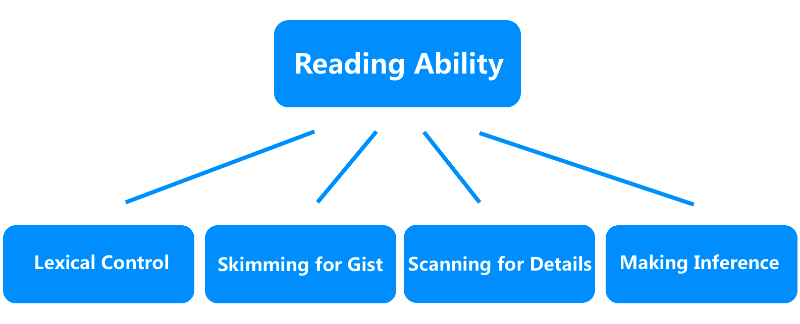

chapter1.1--handout
Background Information
About Dale Carnegie
在介绍作者前，我们先来看下作者身上的title美国现代成人教育之父，20世纪最伟大的心灵导师和成功学大师。 你有没有被这些光环震惊到，甚至有点鸭梨山大？ 其实抛开这些闪耀的身份，你会发现作者戴尔·卡耐基也曾是一个没什么自信、毫不起眼甚至有点忧郁的普通人，他的奋斗也一样历经困难但从未放弃，最终才获得成功。
他一生致力于人性问题的研究，运用心理学和社会学知识，对人类共同的心理特点，进行探索和分析，开创并发展出一套较为成熟的成人教育方式。卡耐基的主要代表作有：《沟通的艺术》、《人性的弱点》、《人性的优点》、《人性的光辉》等。
About the Book
看到中译版书名《人性的弱点》时，你是不是也有过望而却步或者购买后就束之高阁的时候？其实英文书名是How to Win Friends and Influence People，很接地气了有木有！忽然就有勇气和好奇心读下去了是不是！好了老师为了让你喜欢上这本书也是操碎了心，下面正经介绍下： How to Win Friends and Influence People写于20世纪早期，美国经济陷入萧条，战争和贫困使许多人失去了对生活的美好愿望，戴尔·卡耐基却独辟蹊径，运用社会学和心理学知识，对人性进行了深刻的探讨和分析，开创了一套融演讲、推销、为人处世、智能开发于一体的教育模式。
书的唯一目的就是帮助解决所面临的最大问题：如何在日常生活、商务活动与社会交往中与人打交道，并有效地影响他人；如何击败人类的生存之敌——忧虑，以创造一种幸福美好的人生；当你通过本书解决上述问题之后，其他问题也就迎刃而解了。 作者也很明确的说了，这本书不是什么道理性的说教，而是教给你该怎么做。"This is an action book"！
Sing Sing prison
辛辛监狱是全美最大的监狱之一，它主要负责关押重刑犯。它位于纽约市区往北40公里处的哈德逊河畔（Hudson River）旁，一个叫做奥西宁的小镇上。

辛辛监狱和普通监狱的不同之处就是，它的警戒力是普通监狱的3倍以上，毕竟是关押重刑犯人的监狱，所以那里的警卫人员全部都是特警和受过专业训练的高级警察。并且，它的装备也比其他的监狱要森严，辛辛监狱的防护措施，可以说是戒备森严，只能进不能出。它的四周全部都是8～9米的围墙，围墙上面布满了高压电线，监狱里有一共1000多个监视摄像头，基本犯人的一举一动都会被拍下来，让犯人无处可逃，可以说是密不透风了。
辛辛监狱共有三个出口，一个大门，一个紧急应急大门，但是这个紧急的应急大门非常隐蔽，很少有人知道它的具体位置在哪里，并且各个出口都是特种部队的人在把手，就算是外人进去要探监，也必须持有相关的证明和证件以及批文，所以一般人想进去都很难。
Two Gun Crowley
外号“双枪”的弗兰西斯-克劳利（Francis "Two Gun" Crowley）于1912年出生，是家中第二子，其单亲母亲因无力养育他，而在弗兰西斯很小时，便将其送予他人抚养。据说，其缺席的父亲是一名警察，这也客观上促成了弗兰西斯对警察的厌恶。在弗兰西斯十三岁时，他的哥哥约翰被警察在执法时枪杀，这也让他更加愤世嫉俗。17岁时，弗兰西斯和另外两名好友，因为在退伍军人舞会中闹事，打伤两人后，被指控蓄意谋杀。弗兰西斯只得潜逃。
在被追捕期间，他抢劫了多家银行，并在一次入室抢劫中，对屋主连开五枪（但并未将其杀死），也因此得到了“双枪”的外号。随后，弗兰西斯多次抢劫，且杀死多人，成为全美头号通缉犯之一。他躲在长岛一间公寓内，与多个情人厮混，但最终被一个旧情人告发，被警察围捕。300多名警察包围了他的公寓，并有1500名群众围观。警察用催泪弹进攻，弗兰西斯甚至还扔回了几个催泪弹。经过两小时的枪战，弗兰西斯身中四枪后投降。最终，弗兰西斯被判死刑，行刑时年仅18岁，可谓是最年轻的一位美国传奇暴徒。
AI Capone
阿尔·卡彭（英语：Al Capone，1899年1月7日——1947年1月25日），又译卡邦，美国黑帮成员，出生于纽约布鲁克林，因斗殴被对手打伤脸部留下疤痕，而拥有“疤脸”的绰号，于1925——1931年掌权芝加哥黑手党，使芝加哥黑手党成为最凶狠的犯罪集团，该集团又被称为“奥特菲 ”，阿尔·卡彭也成为20世纪20~30年代最有影响力的黑手党领导人。
这就是为什么卡叔今天会用辛辛监狱里的人们来举例子了，毕竟这里关着的不是惯犯就是穷凶极恶之人，总之不是什么“善茬儿”！
Vocabulary
capture
💧原文When Crowley was captured中，captured是一个被动用法，被逮到的意思，捕获一枚宠物小精灵，或者抓住某个瞬间，也是captured哦。
weary
- 疲惫的，筋疲力尽，原文Under my coat is a weary heart, but a kind one，杀人犯克劳雷很文艺的表示，隐藏在自己的外衣下，有一颗疲惫而善良的心[手动微笑]
- weary还可以这样用，be weary of，对…感到厌倦的。
correspondence
💧I have had some interesting correspondence with Lewis Lawes，可以指（两个人之间的）通信，（商业或公文）信函，是比较正式的一类信。
scold
💧I learned thirty years ago that it is foolish to scold，30年前人家就知道责备他人，怪别人是很傻的事情，scold的责备与blame不同，有上级对下级的含义，比如： don’t scold your child.
resent
💧动词，表示怨恨、愤怒。原文：The resentment that criticism engenders can demoralize employees, family members and friends...原文中使用了名词形式：resentment，批评会引发怨恨。
Crush Your Problems
On May 7, 1931, the most sensational manhunt New York City had ever known had come to its climax.
💧 manhunt n. 缉捕行动
💧 sensational adj. 轰动的，耸人听闻的
the most sensational manhunt /（that）New York City had ever known / had come to its climax. 这里是省略了that的定语从句。
所以句意是：在1931年5月，纽约发生了一件有史以来最为耸人听闻的缉捕行动。After weeks of search, "Two Gun" Crowley — the killer, the gunman who didn't smoke or drink — was at bay.
💧 at bay: 陷入困境; 陷入绝境
eg: Prisoners armed with baseball bats used the hostages to hold police at bay.
手持棒球棒的囚犯们挟持了人质，使警察无法靠近。
所以文中这一处是想形容克劳雷当时已经身处绝境，无处可退了。"He will kill," said the Commissioner, "at the drop of a feather."
💧at the drop of a feather是at the drop of a hat的变体，意思是立刻、瞬间，毫不迟疑；
这句就是形容凶犯克劳雷杀人不眨眼。Crowley had been having a necking party / with his girlfriend / on a country road out on Long Island.
💧have a necking party用在美式口语中，表示搂脖子亲嘴；
eg: I found myself behind a curtain, necking with my best friend's wife.
我意识到自己在帘子后面吻着挚友的妻子。
文中这里是说克劳雷在和女朋友调情。Crowley drew his gun and cut the policeman down with a shower of lead.
💧 a shower of lead: 枪林弹雨
💧 lead做名词时，除了我们知道的铅，还有“枪弹”的意思。
这句是说，克劳雷掏出手枪朝着警察连开数枪将其击倒。Crowley was sentenced to the electric chair.
💧 sentence作动词时有宣判，判决的意思。所以克劳雷最后的结局就是被判处电椅死刑。They can tell you why they had to crack a safe or be quick on the trigger finger.
💧safe: n. 保险柜，保险箱。
💧crack：vt. 破裂，打开; （使…） 开裂
所以这句意思是：他们会这样告诉你，为什么要撬开保险箱，或是接连的放枪伤害人。Most of them attempt by a form of reasoning, / fallacious or logical, / to justify their antisocial acts even to themselves, /consequently stoutly maintaining that they should never have been imprisoned at all.
💧这个句子这样拆分一下：
most... attempt...to 目的是（to justify：to表示目的，不定式的用法哈）为他们的反社会行为正名；
consequently（因此，表示因果逻辑），激烈的辩解他们不该入狱。
而by a form of reasoning为方式状语，强调criminals尝试着为自己讲道理（reasoning：讲理由、争辩）；
fallacious or logical为插入语，意思是不论理由是否成立，他们都会这么做；
💧不难发现我们分析清楚逻辑，就可以很清楚的理解句子意义啦～
这句就是：大多数罪犯都企图为自己辩解，无论理由是否成立，他们还是会为自己的反社会行为正名，认为自己根本不该入狱。I have enough trouble overcoming my own limitations without fretting over the fact that God has not seen fit to distribute evenly the gift of intelligence.
💧see在这里如果理解为看，会有些奇怪，我们需要认识一个习语see fit：think something is good or necessary to do, 也就是说，God认为平均分配人的天赋是不必要的。
所以这句话大意是：我对克服自己的缺陷都已经感到很吃力了，我不会去抱怨上帝没有将聪明才智的天赋均匀分配。but I personally had to blunder through this old world for a third of a century before it even began to dawn upon me...
💧blunder through 盲目行走
💧dawn upon me 本意是黎明降临我身上，但用在文中的语境可以理解为恍然大悟，突然明白一个道理。
💧 同样还有dawn on me，用法是一样的哦。
句意：可是我自己在这古老的世界上，盲目地行走了三十多年，然后才豁然会悟
Content Analysis
在读这本书之前，你有想过作者会如何开篇吗？直接撒鸡汤？作者用了一个真实的案例来讲述内容。而这也是作者的写作风格，用具体生动的事例讲述发人深省的道理。
这个案例就是发生在1931年5月7日的纽约警方出动大批警力围捕一个臭名昭著的罪犯：克劳雷。这名罪犯向来杀人不眨眼，犯下无数重罪，比如在公路上和女伴调情的时候，面对警察的质询，也会直接掏出枪杀掉了警官，甚至还要对着尸体补上几枪。
(Without saying a word, Crowley drew his gun and cut the policeman down with a shower of lead.)
可即使是这么一位背负无数血债的重犯，竟然会说出“在我的衣服里面，是一颗疲惫的心——仁慈的，一颗不愿意伤害任何人的心”这种话，受刑前，他也只是表示"This is what I get for defending myself” ，可见他并没有对自己有一丝的责备，也不觉得自己伤害了那么多无辜的人是多么严重的罪过。
同样的话也从另一位罪犯，美国的第一号公敌：卡邦，他横行在芝加哥一带，一个最凶恶的匪首。可是，他认为自己是一个有益于群众的人——没有受到赞许，而且是个被人误会的人。
("I have spent the best years of my life giving people the lighter pleasures, helping them have a good time, and all I get is abuse, the existence of a hunted man." )
另一位重犯，休士，竟然也有类似的言论。而这一切，都在我与星星监狱（美国最具标志性的监狱，该监狱从1930年代至今，收押过一些有名的罪犯。其中就有罗森堡夫妇、艾伯特·费什，变态杀人狂魔等，此外还有数不尽的暴徒和流氓）负责人交谈后有所理解了，就像监狱里的罪犯，他们就算到了行刑前也不会觉得自己是有错之人。
（few of the criminals in Sing Sing regard themselves as bad men.）
如果连犯下滔天过错的重刑犯都不承认自己的错误，那么我们日常生活中所接触的普通人，又凭什么会虚心接受别人施加给他们的责备与批评呢？
而已故美国百货大王华纳梅格也说过责备人是一件愚蠢的事，至此作者领悟到：
Criticism is futile because it puts a person on the defensive and usually makes him strive to justify himself. Criticism is dangerous, because it wounds a person's precious pride, hurts his sense of importance, and arouses resentment.
批评是没有用的，它使人增加一层防御，而且竭力替自己辩护；批评也是危险的，它会伤害了一个人的自尊，并激起他的反抗。
这个观点也是被著名的心理学家B. F. 斯金纳证明，动物在做了好事得到奖励的情况下，会比它在因犯错而受到惩罚的情况下学得更快而且学到的东西保留得也更长久。后来的研究表明，这对人类也同样适用。我们用批评的办法，很难永久地改变人或事。
另一位心理学家汉斯•塞利也说过人的内心对肯定有多渴望，对责备就有多恐惧。责备所引发的怨恨不仅于事无益，更会打击家人、朋友和员工的积极性。
(As much as we thirst for approval, we dread condemnation.)
科学实验中被证明的观点在社会生活中也有所体现。乔治•约翰斯顿转变了提醒工人戴安全帽的方式，从苛责到从他们的角度，提醒员工安全帽是用来保护他们的，建议他们戴上帽子以保障自己的安全。这样一来，员工的抵触情绪大大降低，违规的现象也显著减少。
（The result was increased compliance with the regulation with no resentment or emotional upset. ）
Today's Bonus
你认为，阅读最核心的能力是什么？
这是我们在水滴阅读开始的时候 一直在问自己的一个问题
很多内测的同学会讲 很大的词汇量 很好的的语法能力 很多的知识储备 . . . 然而，这样的问题也一直困扰着我们
- 我背了很多单词，转头就忘
- 一个句子中所有单词我都认识， 放到一起就不懂
- 我学会了所有复杂句法知识， 但这个小说作者怎么不按套路出牌？
所以今日份彩蛋，我们来聊聊提升英文阅读能力，最核心的要如何改进自身 正如英国英语教学专家杰里米·哈默Jeremy Harmer提出的ESA理论，语言能力提升包括以下三个阶段：投入(Engage)、学习(Study)和运用(Activate)，我们不妨把词汇语法的积累理解为engage的阶段，当你具备了初步的基础投入，比如具备了2400中学词汇量水平，学会了核心的语法结构，而此时距离真正可以做好独立的阅读，或者说，可以达到语言能力螺旋上升的形式，还需要有两个阶段来形成闭环，包括以engage期获取的基础去做内容的study（实际阅读、理解他人、题目练习），以study之后的获取再次activate（课后总结、循环阅读）。
因此，我们将课程打造成了三个能力模块，来帮你解决能力值提升的问题：词汇积累＋精读练习＋精品微课，坚持100天，我们会一起在：
- 💧词汇能力（Lexical Control）
- 💧概括主旨（Skimming for Gist）
- 💧精读细节（Scanning for Details）
- 💧合理推断（Making Inference）
这4个方面，得到属于自己的进步。

所以
放下对词汇语法的恐慌和执念
我们一起以轻松愉悦的方式
邂逅更加美丽的灵魂